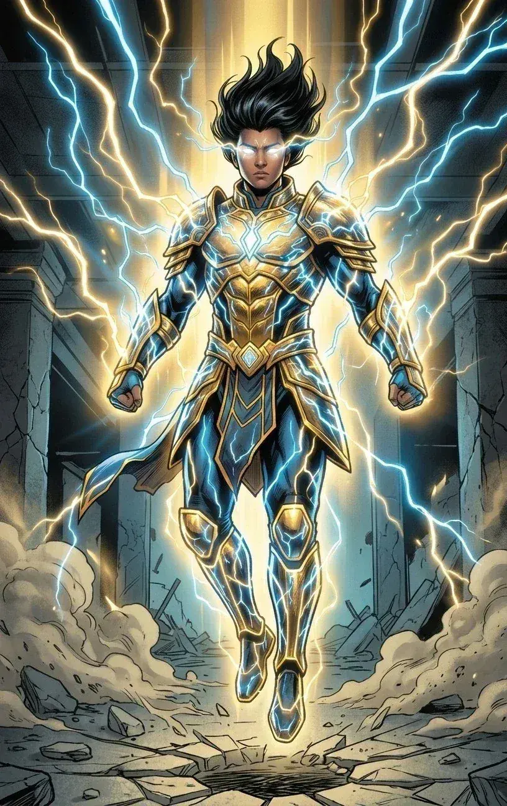
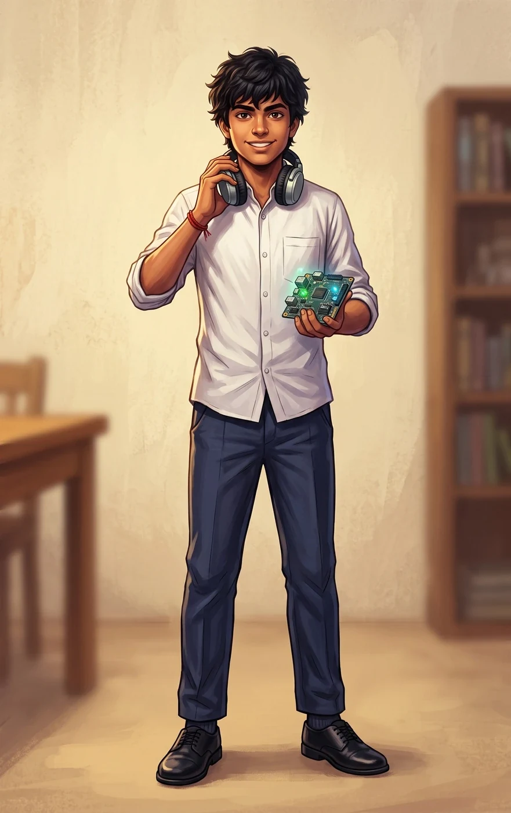
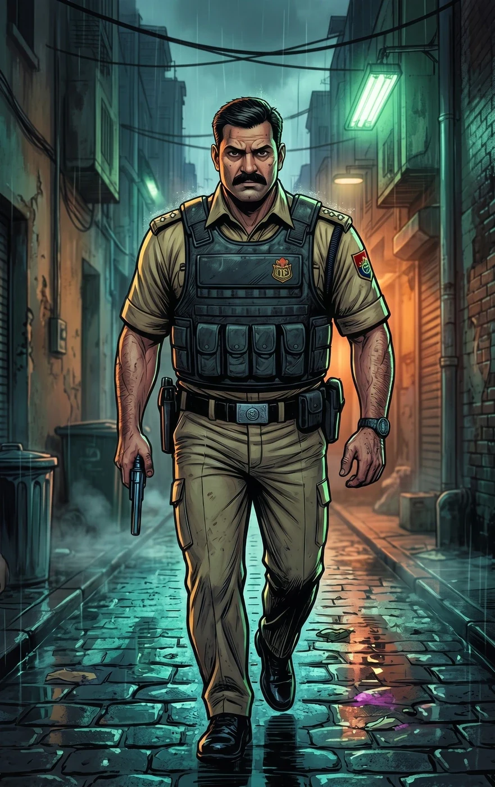
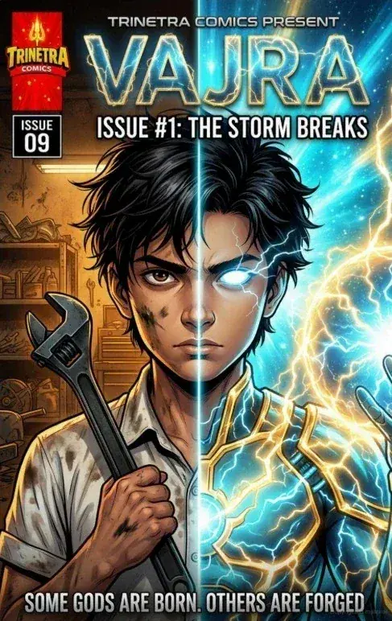

TRINETRA HERO / VAJRA
VAJRA
THE HEIR OF STORMS
Atharv Shukla is a 16-year-old engineering prodigy from Kashi who accidentally bonded with the ancient Trinetra Fragment while trying to save his police officer father. The relic awakened him as Vajra—the living embodiment of the storm.
01 / IDENTITY
02 / ORIGIN
The boy who
awakened the storm.
Atharv Shukla was a garage-tinkering genius who viewed the world as a series of solvable equations. His father, Inspector Saurabh Shukla, waged a gritty war against Kashi’s underworld.
When Saurabh’s police squad was slaughtered by the high-tech Pataal Syndicate, Atharv used his intellect to fight back until he was cornered. In a desperate attempt to save his father, he made physical contact with the Syndicate’s prize—the confiscated Trinetra Fragment.
The ancient cosmic relic bonded with Atharv’s neural network, overwriting the laws of physics and awakening him as Vajra.
03 / POWERS
Divine Plasma
Generate and control solid, ethereal golden and cyan-blue lightning.
Ride the Storm
Levitation and high-speed flight through electromagnetic repulsion.
Lightning Barrier
His lightning can act as a solid physical barrier, granting superhuman durability.
Break the Machine
Targeted electromagnetic pulses can fry, manipulate or short-circuit modern technology.
04 / ABILITIES
Science First.
A prodigy in applied physics, chemistry and electrical engineering.
The World as Equations.
Atharv sees environments as systems of equations, allowing him to weaponize his surroundings almost instantly.
05 / THE TRINETRA FRAGMENT
An ancient relic.
A living network.
The Trinetra Fragment is the ancient divine relic that changes Atharv’s life. After contact, it bonds with his neural network and chest, becoming the source through which he channels divine electrical energy.
It is not simply a weapon: it is the bridge between an ordinary human nervous system and a power that feels godlike.
06 / WEAKNESSES
Power has a price.
Channeling too much divine energy risks burning out Atharv’s human nervous system.
Not a trained fighter.
He is a scientist and tinkerer, not a trained martial artist. He relies heavily on raw power and intellect.
His father matters.
Atharv is fiercely protective of his father and innocent bystanders, making him vulnerable to hostage situations.
Engineer meets god.
Analytical, fiercely loyal, pragmatic and introverted. Deeply empathetic but highly calculating in a crisis.
07 / CHARACTER PORTRAITS

THE BOY BEHIND THE STORM
ATHARV SHUKLA
Brief description: A 16-year-old school boy and engineering prodigy from Kashi. Atharv is lean and wiry, with messy black hair and sharp, intelligent brown eyes. His grease-marked hands and mechanical scars reflect his habit of building and repairing things.
He usually wears an untucked white school uniform shirt, dark grey trousers, scuffed sneakers and carries a heavy olive-green canvas backpack filled with tools.

FATHER / POLICE OFFICER
INSPECTOR SAURABH SHUKLA
Brief description: Atharv’s father and a sincere police officer who has waged a gritty war against Kashi’s underworld. His elite squad becomes the target of the high-tech Pataal Syndicate, putting father and son at the center of Vajra’s origin.
Saurabh is more than Atharv’s father: he is the emotional tether that keeps the young hero connected to ordinary human responsibility.
08 / VAJRA ARMOR
Lightning
made solid.
When Vajra awakens, he floats slightly off the ground. His eyes become blank and glowing white, with cyan electricity arcing from the pupils.
His armor is an ethereal, crackling shell of solid golden and cyan-blue lightning. Ancient Hindu warrior motifs—bracers and chest plating—merge with raw modern plasma energy.
09 / STORY
The story of
Vajra.
SHORT BIO
A 16-year-old school boy and engineering prodigy from Kashi who accidentally bonded with an ancient divine relic to save his police officer father, transforming into the living embodiment of the storm—Vajra.
DETAILED BIO
Atharv Shukla was a garage-tinkering genius who viewed the world as a series of solvable equations. His father, Inspector Saurabh Shukla, waged a gritty war against Kashi’s underworld.
When Saurabh’s squad was slaughtered by the high-tech, futuristic Pataal Syndicate, Atharv used his intellect to fight them off until he was cornered. In a desperate bid to save his father’s life, Atharv made physical contact with the Syndicate’s prize: the confiscated Trinetra Fragment.
The artifact bonded with his neural network, overwriting the laws of physics and awakening him as Vajra, the Heir of Storms. Now Atharv must balance his mundane high-school life with his new role as protector of Kashi, defending the sacred city from futuristic syndicates and waking mythological horrors.
10 / COMICS
Published stories.
Maximum 3 latest issues

Issue #1 / English
The Storm Breaks
Gritty tactical survival met ancient divine power when Inspector Saurabh Shukla’s police squad was ambushed by the high-tech, futuristic Pataal Syndicate in an abandoned Kashi silk factory.
TRINETRA COMICS UNIVERSE
The storm has chosen its heir.
Vajra’s journey is only beginning.